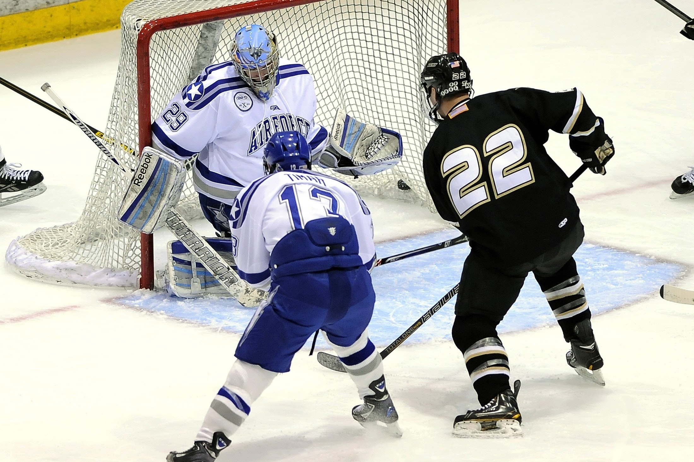

Ten en cuenta estos consejos antes de lanzar tu apuesta
Haz que tu apuestas sean más efectivas y miniza las posibilidades de riesgo.

No apuestes a ciegas a los favoritos
Muchos de nosotros hemos visto que un partido de fútbol está a punto de empezar y hemos apostado por los favoritos, por curiosidad. Sin embargo, las casas de apuestas saben que en el mercado de apuestas 1X2, todos los favoritos en el juego ganan peso en dinero, por lo que las apuestas rara vez obtienen beneficios independientemente de que esa selección gane. Por supuesto, apostar por los favoritos significa, en primer lugar, obtener beneficios decrecientes. Una trampa en la que puede caer un apostador es la de acumular un número de favoritos en su apuesta sin correr cada juego, preguntándose si realmente cree que cada equipo ganará.
Revisa otros mercados disponibles
Aunque muchos de nosotros preferimos apostar en el mercado 1X2 o colocar acumuladores en muchos equipos, a menudo se puede encontrar valor al explorar mercados de apuestas menos conocidos. Puede ser rentable ver un partido y ver cómo se desarrolla antes de mirar las probabilidades. Es posible que esperes que el equipo A y el equipo B jueguen un partido con muchos goles y que el equipo A salga victorioso. En ese caso, las apuestas BTTS podrían ser su mejor opción, especialmente si el precio es atractivo. O tal vez no tenga una idea clara de qué equipo ganará, pero le gusta la idea de un partido de pocos goles en el que podría apostar por menos de 2,5 goles, o menos de 1,5 goles.

Anota a tus apuestas y limita tus pérdidas
Te recomendamos que registres tus apuestas diaria o semanalmente. Registra información como las apuestas, los tipos de mercado de apuestas, las probabilidades y el resultado de cada parido que apostó. Después de hacer una serie de apuestas, comprueba la información para ver si tienes más éxito con ciertos tipos de apuestas. Es posible que su estrategia de apuestas necesite algunos ajustes. El objetivo del juego es obtener el mayor beneficio posible de las selecciones ganadoras y asegurarse de que las apuestas perdedoras tienen un elemento de control de daños. Cuanto más se esfuerce, más probabilidades tendrá de recuperar su dinero.
Miniza el riesgo de tu apuesta
Incluso las coberturas son algo más que salidas de emergencia. Aunque es matemáticamente imposible obtener beneficios a favor o en contra de un resultado concreto (en cuyo caso la casa de apuestas quebraría rápidamente), una selección cuidadosa del mercado de fútbol le permitirá forzar su valor. Puede crear coberturas que minimicen el riesgo sin destruir los beneficios. Tomemos como ejemplo el partido de la Premier League entre el Tottenham y el Newcastle. La posibilidad de que el Newcastle gane por 6/1, parecía un punto que merecía la pena teniendo en cuenta su actuación contra el Chelsea recientemente, pero es posible que se necesiten algunas garantías antes de desprenderse del dinero. Elegir un mercado común para minimizar las posibilidades de perder todas las apuestas habría sido lo mejor en este caso. Tiene sentido empezar con un mercado bonito y amplio en el que se puedan obtener beneficios independientemente del equipo que acabe anotando puntos. Y dada la destreza en el tiro de estos dos equipos, habría valido la pena considerar más de 2,5 goles a 4/5. Otra opción de cobertura es utilizar mercados que incluyan la cobertura de cuotas bajas. Por ejemplo, apueste por el Newcastle o por un empate a 13/8, o por un empate del Newcastle sin apuestas a 17/5 (un empate devuelve su apuesta).
Y lo mas importante, las apuesta deportivas son una forma divertida de ocuparnos y simultaneamente ganar dinero. Sin embargo es conveniente gastar un tiempo prudente en esta actividad y dejar espacio para nuestras demas actividades cotidianas.